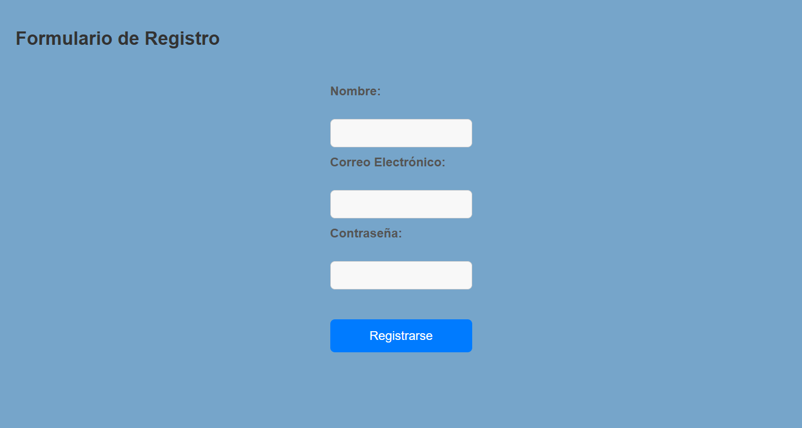
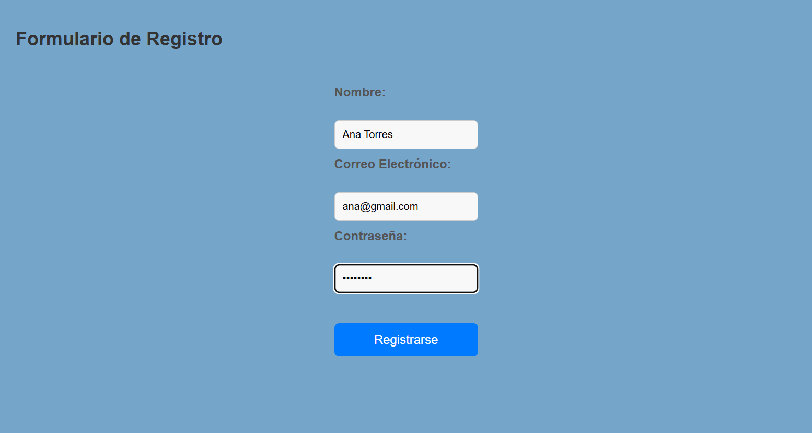
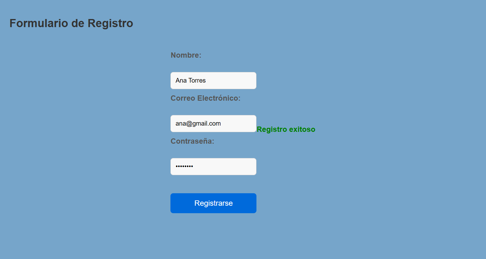
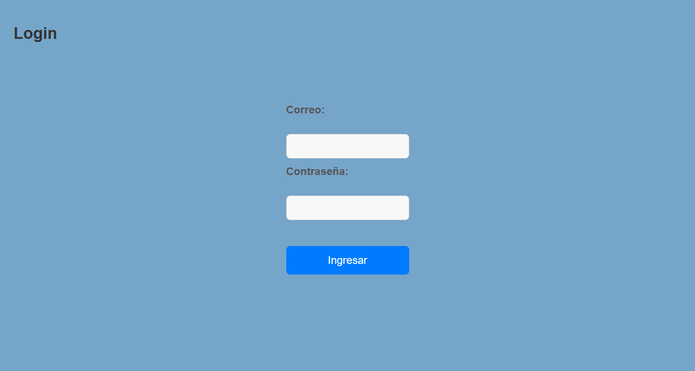
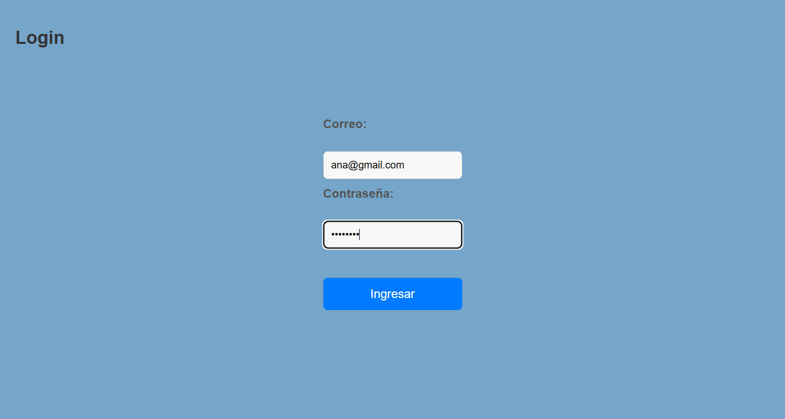
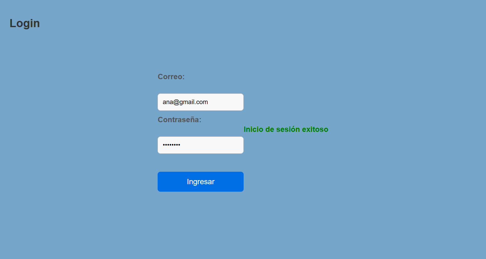

Paso 1: Se abre el formulario de registro.
Resultado esperado: Pagina cargada correctamente.
Paso 2: Se ingresan datos validos (nombre, correo, contraseña).
Resultado esperado: Los campos son completados sin errores.
Paso 3: Se hace clic en “Registrarse”.
Resultado esperado: Aparece el mensaje “Registro exitoso”.
Paso 1: Se abre la página de login.
Resultado esperado: Página cargada correctamente.
Paso 2: Se ingresan las credenciales correctas.
Resultado esperado: Los campos son completados sin errores.
Paso 3: Se hace clic en “Ingresar”.
Resultado esperado: Aparece el mensaje “Inicio de sesión exitoso”.
Todas las pruebas automatizadas se ejecutaron correctamente.